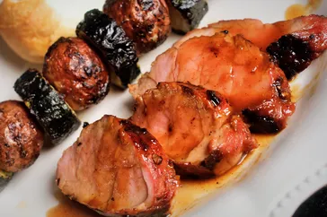

Pork

Description
These hamburgers with grilled apple and chili crisp are juicy and delicious. For your summer grilling, level up beef patties with grilled sweet-tart apples and thick-cut onions and chili-crisp mayo.
Ingredients
- 2 red apples, cored (such as Fuji, Gala, or Pink Lady)
- 1 pound ground beef
- 1/4 cup fine dry breadcrumbs
- 1 tablespoon plus 2 teaspoons chili crisp, divided, plus more for serving
- 1/2 teaspoon salt
- 2 (1/3-inch) slices red onion
- 4 hamburger buns
- 1/4 cup mayonnaise
Steps
Step 1
- Slice 1 apple using a mandoline slicer to create 8 (1/4-inch-thick) slices. Shred any remaining scraps plus all or part of the second apple to get 1/2 cup shredded apple. Squeeze shredded apple to extract some of the moisture. Reserve any remaining apple for another use.
Step 2
- Preheat an outdoor grill to medium heat (350 to 375 degrees F (175 to 190 degrees C)).
Step 3
- Combine ground beef, breadcrumbs, 1 tablespoon chili crisp, salt, and the 1/2 cup shredded apple in a bowl. Shape into 4 (1/2-inch-thick) patties, 4 inches in diameter. Mixture may be wet so be sure to tightly pack patties.